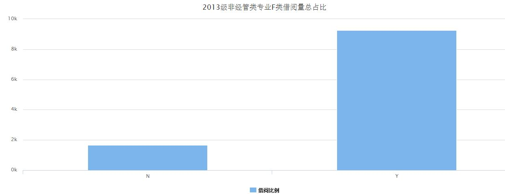

贵州财经大学图书馆使用的图书分类法是中图法，F类图书表示的是经济类图书，而我校又是经济管理类的大学，所以将F类图书作为一个特殊的类别进行分析。 以下图形显示的是贵州财经大学2013级非经管类专业与经管类专业F类（经济类）图书借阅总量的比较：
上图两个板块分别表示的是2013级非经管类专业与经管类专业的F类（经济类）图书借阅总量。N表示的是非经管类专业经济类图书的借阅总量，Y表示的是经管类专业经济类图书的借阅总量。 当鼠标悬浮在某一板块时，会显示相应版块的数据。从图中可得，非经管类专业的借阅量是1657本次，而经管类专业的借阅量是9244本次。可以从中体现出我们学校经济管理类大学的特征。
以上两张图中，第一张显示的是非经管类专业和经管类专业的经济类图书的借阅量的总量，第二张显示的是两类专业的借阅总量和比例，可以得出，经管类借阅量的比例是84.8%，非经管类专业的借阅量的比例是15.2%。